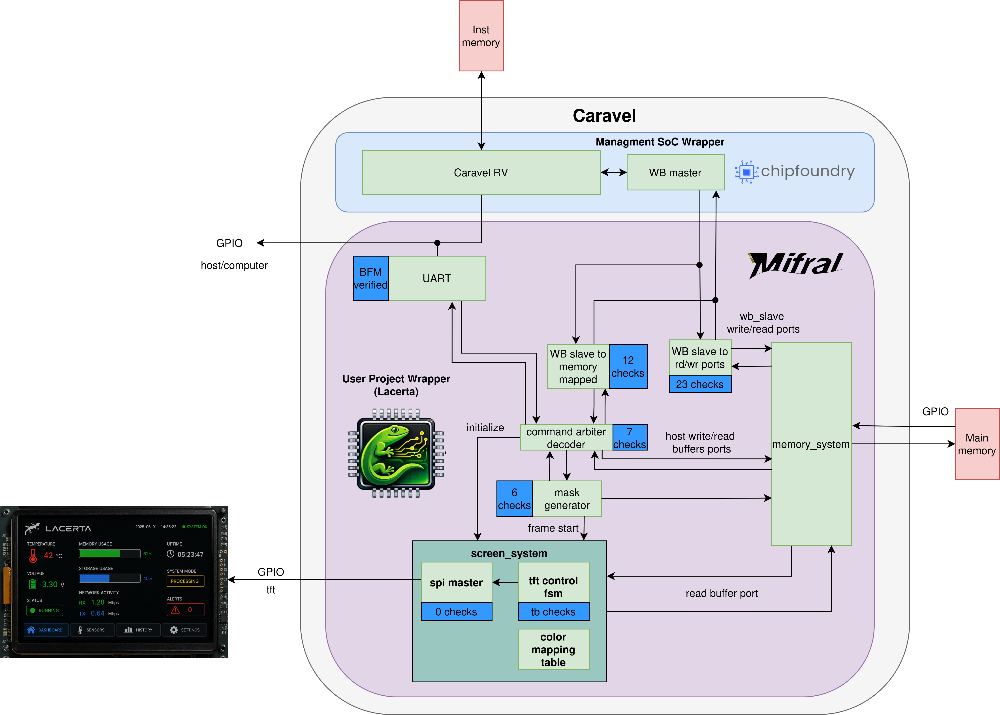
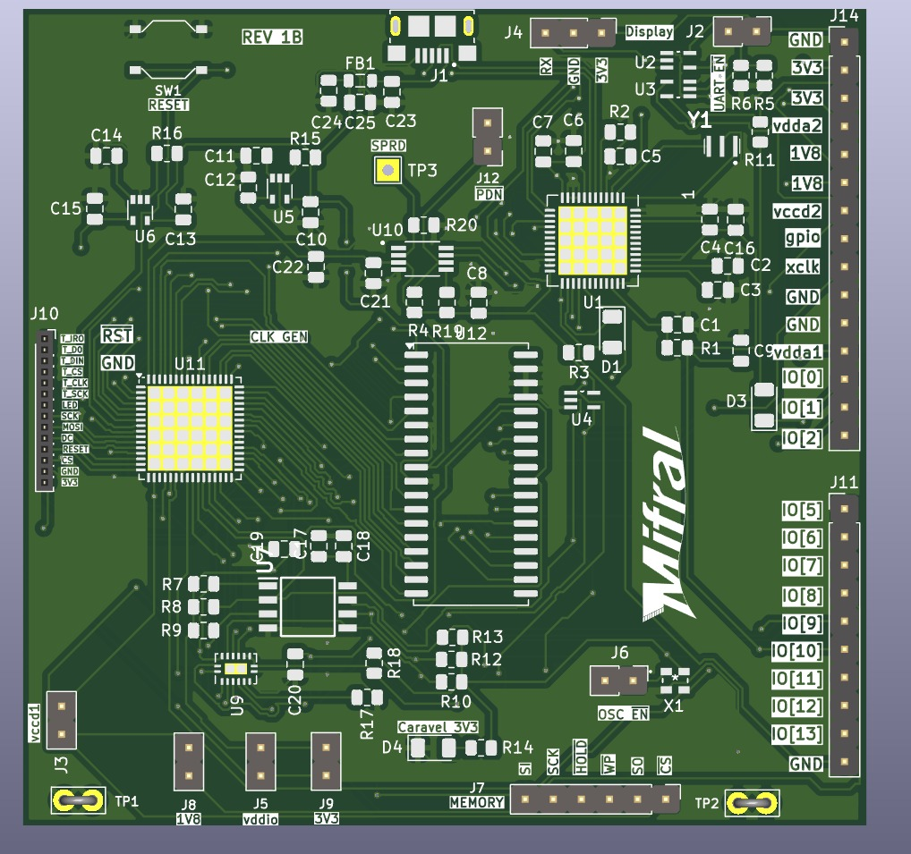

System Architecture Overview
The Lacerta platform consists of four major components: the custom silicon implementation, the PCBA hardware, the firmware layer, and the interface design software. Together, these elements form a complete open-source system for creating, deploying, and operating customizable embedded graphical interfaces.
Custom Silicon (Caravel User Project)
The core of the Lacerta platform is a custom ASIC implemented in the SKY130 process and integrated inside the Caravel user project area. This subsystem realizes the hardware graphics engine that receives interface commands, updates the internal display state, and generates the output stream presented on the display.
The Lacerta ASIC follows a memory-centric architecture. Configuration data and runtime values enter the system through UART. Depending on the selected operating mode, the received data can be forwarded directly to the user project area or first processed by the embedded Caravel RISC-V processor. Internal transactions are routed through the Wishbone interconnect to the rendering logic, which updates the frame contents stored in memory. The display output block then reads that memory and continuously converts it into the signal required by the connected SPI TFT/OLED display.
The ASIC includes the following main modules:
- the external SRAM interface,
- the TFT SPI interface,
- the UART command interface,
- the Wishbone interface,
- the screen update logic,
- the drawing logic,
- and the shared memory subsystem.

Figure 5. Block diagram of the Lacerta ASIC inside the Caravel environment. The figure shows how UART data and the embedded Caravel RISC-V processor interact through the Wishbone-connected control path, rendering logic, and memory subsystem; the updated frame data is then read by the display output block to drive the screen.
Its main function is to route requests from different clients to the same memory system. In this design, several blocks can need memory access at different times:
- the UART host path,
- the screen refresh path,
- the drawing/mask update path,
- and the Wishbone/processor path.
dig_top assigns each of these clients to dedicated read/write buffers and then connects them to mem_sys.
Memory subsystem
memory_system/mem_sys.v
mem_sys is the memory traffic manager. It wraps the internal buffering and arbitration blocks used to access external SRAM safely and efficiently.
Its role is to:
- accept multiple read and write requests from independent clients,
- queue data through FIFOs,
- arbitrate accesses to the main memory,
- and present a simpler buffered interface to the rest of the system.
memory_system/buffers.v
This module instantiates the FIFOs used by the memory subsystem.
There are:
- read buffers, filled with data coming from SRAM,
- and write buffers, loaded by producers before data is committed to SRAM.
This buffering decouples slow or bursty memory access from the logic that produces or consumes pixels.
memory_system/buffers_filler.v
This block handles SRAM read-side arbitration.
When a client requests a burst read, buffers_filler:
- starts the read burst,
- fetches bytes from SRAM,
- and writes them into the selected read buffer.
It is especially important for:
- screen refreshes,
- drawing operations that need to read current pixels,
- and Wishbone/UART reads.
memory_system/buffers_discharger.v
This block handles SRAM write-side arbitration.
When a client has data ready in a write buffer, buffers_discharger:
- reads bytes from the selected write FIFO,
- writes them into SRAM,
- and acknowledges the write burst when complete.
This is the path used when new image data or modified pixels must be stored back into memory.
memory_system/sfifo.v
This is the generic synchronous FIFO used as the building block for the read and write buffers.
memory_system/sram_controller.v
This module converts the internal memory read/write handshake into the real external SRAM control signals.
It is the low-level bridge between the buffered internal memory system and the physical SRAM pins.
Screen output subsystem
screen/screen_system.v
screen_system is the top module for the display output path.
It wraps:
tft_control_fsm,spi_master,- and
color_mapping_table.
Its job is to turn pixel data stored in SRAM into serial transactions for the TFT display.
screen/tft_control_fsm.v
This is the main display controller.
It performs three major functions:
-
TFT initialization
It reads a small initialization memory and sends commands/data sequences to configure the TFT controller. -
Frame or region refresh
It receives a rectangular region to update, reads the corresponding pixel bytes from memory, and sends them to the TFT RAM. -
Sidebar/logo loading
It can also load a sidebar area using direct 16-bit pixel data.
For the active HMI area, the screen logic does not always store full RGB565 pixels in memory. Instead, it can store compact pixel codes that index a color table. This reduces memory usage and lets the design map logical colors to real RGB565 values during display.
screen/color_mapping_table.v
This module is a small programmable lookup table.
It converts compact pixel/color indexes into 16-bit RGB565 values before transmission to the TFT. This is useful for HMI graphics where many pixels reuse the same small set of colors.
screen/spi_master.v
This block serializes bytes onto the TFT SPI interface.
It sends:
- controller commands,
- command parameters,
- and pixel bytes.
TFT-related behavior
The screen path supports partial updates. Instead of redrawing the whole display every time, the system can update only the rectangular region affected by an object change. This is a good fit for HMI screens where indicators, bars, graphs, or digits change independently.
Drawing and graphic-update subsystem
drawing/mask_generator.v
mask_generator is the object update engine.
It reads existing pixel bytes from memory, modifies selected bits according to the object type, and writes the updated bytes back to SRAM.
Supported object styles include:
- boolean-style objects,
- horizontal incremental objects,
- vertical incremental objects,
- graph-like objects,
- and mask-based objects such as 7-segment displays.
After the memory update is complete, this block triggers a screen refresh of the affected region so the TFT shows the new HMI state.
In practice, this is one of the key blocks that makes the system act like an HMI rather than only a frame buffer.
Command and control subsystem
command_arbiter_decoder.v
This block is the central command decoder.
It receives control transactions from:
- the UART memory-mapped interface,
- and the Wishbone control interface.
It decodes these transactions into actions such as:
- start memory reads or writes,
- configure drawing object parameters,
- trigger object redraws,
- configure screen initialization entries,
- configure the color map,
- start a TFT refresh,
- enable the microprocessor path,
- or request a soft reset.
This module is effectively the control-plane hub of the system.
UART subsystem
uart/uart_ip_memory_mapped.v
This is the UART front-end used by an external host.
It converts UART packets into simple memory-mapped read/write operations. That lets a PC or external controller load image data, program display settings, and trigger drawing or refresh operations without directly touching the internal RTL details.
Other UART files
The remaining UART modules implement the serial interface internals:
- receive path,
- transmit path,
- baud clock generation,
- status/control registers,
- synchronization,
- and the packet/control FSM.
Together they provide a command port for setup, debugging, and image/control-data loading.
Wishbone and processor interface
wb_slave/wb_slave_memory_mapped.v
This module exposes a Wishbone slave interface for control-oriented accesses.
It is used for memory-mapped control registers such as drawing commands and screen control commands.
wb_slave/wb_slave_to_mem_sys_ports.v
This module adapts Wishbone transactions to the internal byte-oriented memory system.
Because Wishbone is 32-bit wide while the main memory path is 8-bit wide, this block breaks or assembles accesses across multiple byte transfers.
This lets a processor or SoC access the image memory stored in SRAM through the same shared memory subsystem.
Typical system operation
In a normal HMI use case, the flow is:
- The host loads image assets, masks, or configuration data into SRAM.
- The TFT is initialized through the screen subsystem.
- A processor or UART command updates an object value.
command_arbiter_decoderconfigures and startsmask_generator.mask_generatorreads the relevant image area, modifies it, and writes it back.- The updated rectangle is requested from
screen_system. tft_control_fsmfetches the pixels from memory and streams them to the TFT throughspi_master.
This organization makes the design efficient for HMIs where only small regions of the screen change at a time.
Lacerta Board
The Lacerta Board integrates multiple subsystems including power regulation, clock generation, communication interfaces, and peripheral connectivity into a single PCB. The board enables seamless interaction between a host computer and the embedded system through a USB-to-Serial interface, while also supporting external programming via SPI Flash memory.
At its core, the board hosts the main SoC, exposing essential signals such as GPIOs, power rails, and communication buses. Additional components such as a MEMS oscillator provide stable timing, while voltage regulators ensure reliable power delivery. The inclusion of accessible pin headers allows flexible expansion and testing, making the platform suitable for both prototyping and educational use.
The system also supports graphical output for SPI-based TFT/OLED displays, enabling the development of hardware-driven user interfaces on compact embedded screens. Debugging and control are facilitated through onboard LEDs and a reset button, providing immediate feedback and system management capabilities. Overall, the board offers an integrated environment for plug-and-play experimentation and evaluation.

Figure 7. 3D rendering of the Lacerta Board, illustrating component placement and layout, including the Caravel/Lacerta chip placement, voltage regulators, clock generation circuitry, SPI Flash memory interface, GPIO headers, and peripheral connectors, providing a realistic view of the assembled hardware platform.
Firmware
The Lacerta platform includes a firmware layer that can run directly on the embedded RISC-V processor provided by the Caravel SoC. This firmware acts as the control layer responsible for managing the graphical interface and coordinating the interaction between system inputs and the Lacerta hardware rendering engine.
Firmware executed on the Caravel RISC-V processor is responsible for:
- receiving UART data from an external host or preprocessing stage
- updating graphical elements in memory
- configuring interface parameters
- controlling the display generation circuit through the Wishbone bus
During operation, the RISC-V processor reads incoming UART data, applies any required logic or mathematical processing, and translates this information into graphical updates. The processor sends commands through the Wishbone master interface to the Lacerta display engine, which writes the corresponding graphical data into the system memory.
The SPI display output controller reads the graphical data stored in memory and generates the signal that produces the final image on the display.
In addition to running on the embedded processor, the Lacerta system can also interact with external microcontrollers. In this configuration, an external controller may collect sensor data or perform additional processing and then transmit the relevant information to the Caravel system through UART.
This architecture allows Lacerta to operate in two modes:
- Direct mode, where UART data is forwarded with minimal latency to update the graphical interface.
- Processing mode, where UART data is first handled by the Caravel RISC-V processor before the resulting values are sent to the display engine.
By leveraging the embedded RISC-V processor and the Wishbone interconnect, the firmware provides a flexible mechanism for controlling the graphical interface while preserving the UART-centered communication model described for the platform.
Interface Design Software
The fourth major component of the Lacerta architecture is the interface design software, which provides the user-facing environment for defining custom graphical interfaces.
The software allows users to create custom interfaces through a visual editor and export configuration files used by the hardware engine.
Through this visual editor, users can place and configure graphical elements such as buttons, bars, numeric indicators, and status displays. The tool allows the interface to be designed at a high level without requiring manual implementation of low-level graphics logic.

Figure 6. Graphical editor of the Lacerta Interface Design Software, where users can design custom embedded interfaces by arranging graphical components such as seven-segment displays, bars, and indicators.
Once the design is complete, the software generates a configuration file that describes the interface structure and parameters. This file is then loaded into the Lacerta hardware engine, enabling the ASIC to render the desired interface directly in hardware.
By combining these four components, Lacerta provides a complete and reproducible platform for configurable embedded HMIs, spanning interface creation, silicon implementation, runtime control, and physical system integration.